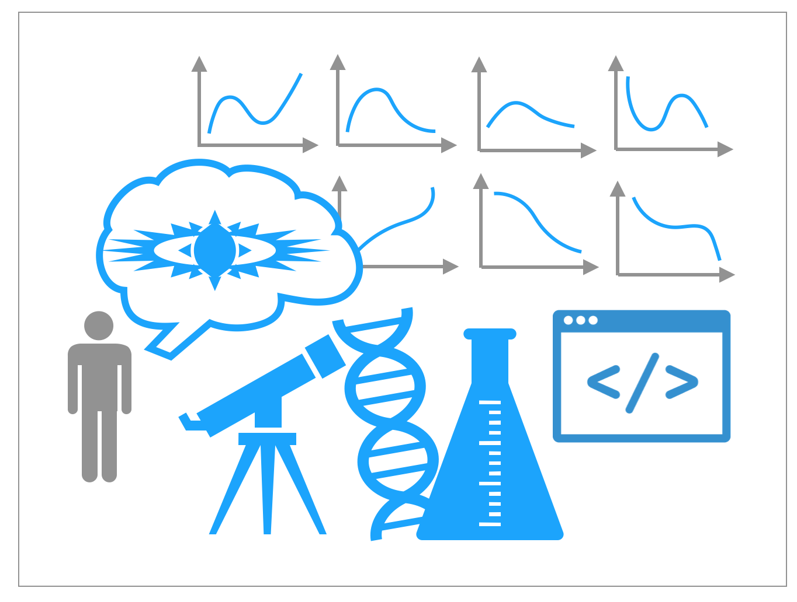

Crowdsourced Image Segmentation
HCOMP 2018, Demo Paper
Developed techniques for evaluating the quality of crowdsourced image segmentation by aggregating across multiple workers.
I am a PhD student at UC Berkeley working with Professor Aditya Parameswaran. My current research interest lies in interactive data analytics, visualization, database usability, and human-computer interaction. I am currently working on tools that assists data scientists in the process of exploratory data analysis and machine learning. Before this, I was at the Computer Science department at University of Illinois, Urbana-Champaign. I received my Bachelor's degree in physics and astrophysics from UC Berkeley in 2016.

A Human-in-the-loop Perspective on AutoML: Milestones and the Road Ahead
[PDF]
IEEE Data Bulletin 2019 |

You can't always sketch what you want: Understanding Sensemaking in Visual Query Systems
[PDF]
[Technical Report]
IEEE Visual Analytics Science & Technology (TVCG Track at VAST'19 at VIS) |
Avoiding Drill-down Fallacies with VisPilot: Assisted Exploration of Data SubsetsACM Intelligent User Interface (IUI) 2019 |

The Case for a Visual Discovery Assistant: A Holistic Solution for Accelerating Visual Data Exploration
[PDF]
IEEE Data Bulletin 2018 |
Crowdclass: Designing classification-based citizen science learning modulesAAAI Human Computation and Crowdsourcing (HCOMP) 2016 |

Skintillates: Design and Prototype Epidermal Interactions
[Project Page] [PDF]
Honorable Mention AwardACM Designing Interactive Systems (DIS) 2016 |

‘I dont want to wear a screen’: Probing perceptions of and possibilities for dynamic displays on clothing
[Project Page] [PDF]
Best Paper AwardACM Computer-Human Interaction (CHI) 2016 |
HCOMP 2018, Demo Paper
Developed techniques for evaluating the quality of crowdsourced image segmentation by aggregating across multiple workers.
KDD 2017, ML4Fashion Workshop
Classification and crawling Twitter data to identify fashion accounts in social networks.
AAAI 2017, AI for Smart Grids & Buildings Workshop

Comparison of Clustering Techniques for Residential Energy Behavior using Smart Meter Data.

Developing a rapid prototyping technique for building circuit boards without involving conventional PCB/chemical etching procedures.

Collaboration with Google Advanced Technologies and Projects (ATAP) group on a new type of interactive wearable technology.
Creating low-cost, accessible fabrication technique for on-skin wearable electronics that can integrate with a variety of electronic components.

Designing a pipeline for generating scientifically calibrated images of large nearby RC3 galaxies using an adaptive algorithm for positional update.

Applying unsupervised machine learning algorithms to cosmological simulations for finding dark matter haloes.

Investigating how systematics affect the imaging data quality from the Sloan Digital Sky Survey.

Magnetohydrodynamics, adaptive mesh refinement simulations for the evolution of a collapsing dense core.

Investigating the effects of Papaloizou-Pringle and magnetorotational instabilities in accretion disk torus.


Jupyter Notebook tutorials on how to build, run, and analyze astrophysical simulations.